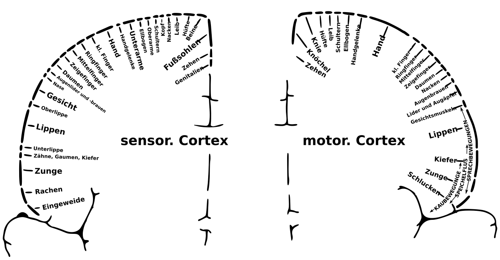

Caso clínico · Pág. 04 de 07
Focal: tremer e conversar — consciência e lateralidade
Maca da emergência — o paradoxo
Paciente treme o braço direito e continua respondendo perguntas. Focal? Generalizada? Com ou sem consciência?
O paradoxo “motor + conversa” destrava a subdivisão da focal.
Consciência preservada e focal motora
A crise focal tem subdivisões quanto à consciência. Pode haver focal com consciência preservada.
Exemplo mecanístico: grupamentos de neurônios motores do membro superior direito entram em atividade excessiva → geram motricidade (tremor/movimento). Se a consciência se mantém durante o tremor de um membro → crise focal com consciência preservada. Se o fenômeno é motor → focal motora.
Lateralidade: um lado do corpo = um hemisfério
Regra de ouro: movimento motor em um lado só do corpo implica um hemisfério só — o hemisfério esquerdo controla o braço direito. A lateralidade córtico-motora fecha a segurança de classificar como focal.
Perda de consciência (ex-“complexa”)
A mesma crise pode ocorrer com perda da consciência → focal com perda da consciência. Antigamente, a focal com perda de consciência era chamada de “complexa”.
Perda de consciência na focal envolve circuitos de sono-vigília. Fenótipo clínico possível: falando, mexendo o braço, olhando para o infinito.
Propagação: focal que vira TCG bilateral
O estímulo excessivo pode propagar e chegar ao outro hemisfério. Focal pode evoluir para tônico-clônica bilateral.
Em tese, qualquer crise pode evoluir para tônico-clônica generalizada — com a ressalva de que o início ainda classifica.

Consciência preservada vs. perdida
Focal · consciência preservada
Tremor/movimento unilateral; conversa possível.
Focal · perda de consciência (ex-“complexa”)
Mesmo foco motor ± circuito sono-vigília; “olhar para o infinito”.
Não confunda
- Focal com consciência preservada ≠ “crise fraca” — é eixo de consciência, não de gravidade.
- TCG bilateral no meio ≠ prova de início generalizado (isso volta na próxima).
Revisão ativa
- Dá para tremer o braço e continuar conversando — o que isso prova?
- HE esquerdo hiperativo no motor: qual hemicorpo treme?
- Por que “pode terminar em TCG” não apaga o início focal?
Quiz
Conexão
Na rua, com dois braços batendo, a pergunta correta não é o que se vê agora — é como começou.